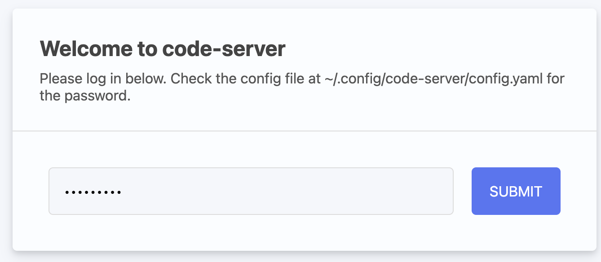
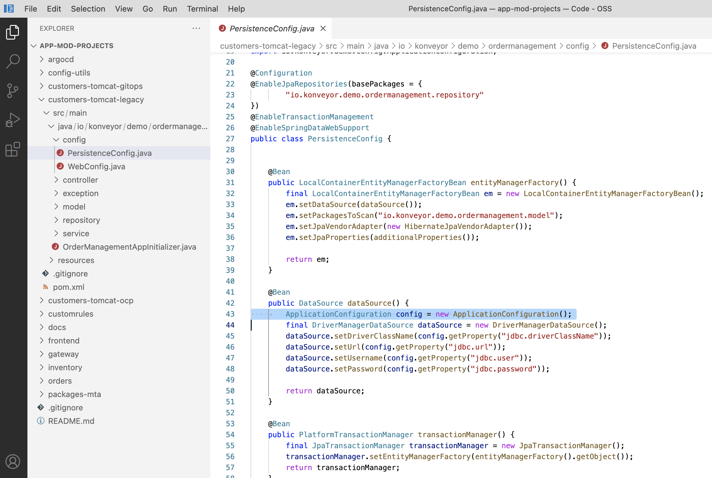
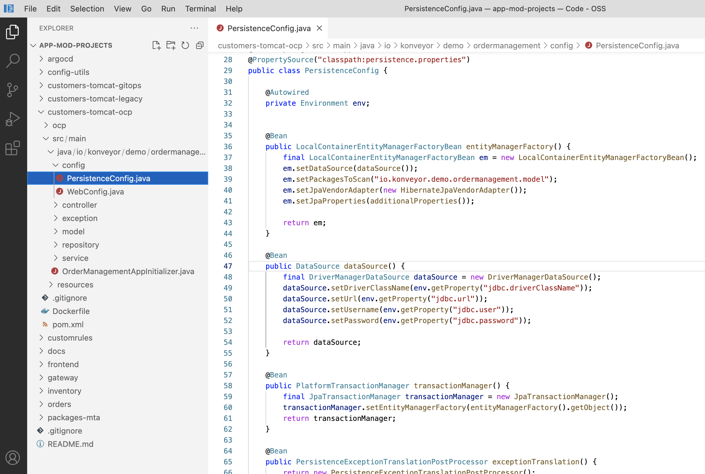

Refactor
In this step you will modernize the customers application to fix the analyzed issues (e.g. Hard coded IP address).
Open a new browser to access the VSCode server that is provided from the e-mail. Use the following credential.
-
Password:
password

Explore the Migration issues
Go to customers-tomcat-legacy project. Then, open PersistenceConfig.java file in src/main/java/io/konveyor/demo/ordermanagement/config directory.

Understand the Solution
We already have the solution how to fix the migration issues. Go to customers-tomcat-ocp project. Then, open PersistenceConfig.java file in src/main/java/io/konveyor/demo/ordermanagement/config directory.

You can compare the code in dataSource() method how to configure the datastore values.
-
AS-IS
@Bean
public DataSource dataSource() {
ApplicationConfiguration config = new ApplicationConfiguration();
final DriverManagerDataSource dataSource = new DriverManagerDataSource();
dataSource.setDriverClassName(config.getProperty("jdbc.driverClassName"));
dataSource.setUrl(config.getProperty("jdbc.url"));
dataSource.setUsername(config.getProperty("jdbc.user"));
dataSource.setPassword(config.getProperty("jdbc.password"));
return dataSource;
}-
TO-BE
@Bean
public DataSource dataSource() {
final DriverManagerDataSource dataSource = new DriverManagerDataSource();
dataSource.setDriverClassName(env.getProperty("jdbc.driverClassName"));
dataSource.setUrl(env.getProperty("jdbc.url"));
dataSource.setUsername(env.getProperty("jdbc.user"));
dataSource.setPassword(env.getProperty("jdbc.password"));
return dataSource;
}➡️ Next section: 5 - Rehost